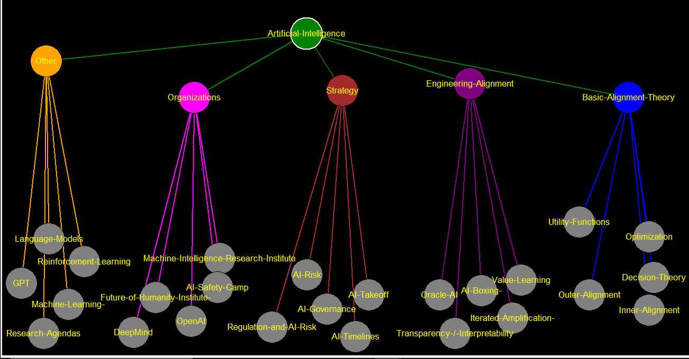

Artificial-Intelligence
[[Basic-Alignment-Theory-->Basic-Alignment-Theory]] [[Engineering-Alignment-->Engineering-Alignment]] [[Strategy-->Strategy]] [[Organizations-->Organizations]] [[Other-->Other]]
Basic-Alignment-Theory
[[Decision-Theory-->Decision-Theory]] (305) [[Inner-Alignment-->Inner-Alignment]] (141) [[Outer-Alignment-->Outer-Alignment]] (122) [[Utility-Functions-->Utility-Functions]] (122) [[Optimization-->Optimization]] (90)
Engineering-Alignment
[[Transparency-/-Interpretability-->Transparency-/-Interpretability]] (146) [[Value-Learning-->Value-Learning]] (130) [[Oracle-AI-->Oracle-AI]] (71) [[Iterated-Amplification--->Iterated-Amplification-]] (61) [[AI-Boxing--->AI-Boxing-]] (56)
Strategy
[[AI-Risk-->AI-Risk]] (510) [[AI-Timelines-->AI-Timelines]] (202) [[AI-Takeoff-->AI-Takeoff]] (137) [[AI-Governance-->AI-Governance]] (129) [[Regulation-and-AI-Risk-->Regulation-and-AI-Risk]] (20)
Organizations
[[Machine-Intelligence-Research-Institute-->Machine-Intelligence-Research-Institute]] (136) [[OpenAI-->OpenAI]] (51) [[DeepMind-->DeepMind]] (43) [[Future-of-Humanity-Institute--->Future-of-Humanity-Institute-]] (28) [[AI-Safety-Camp-->AI-Safety-Camp]] (23)
Other
[[Machine-Learning--->Machine-Learning-]] (258) [[GPT-->GPT]] (151) [[Language-Models-->Language-Models]] (127) [[Reinforcement-Learning-->Reinforcement-Learning]] (99) [[Research-Agendas-->Research-Agendas]] (83)
Decision-Theory
Inner-Alignment
Outer-Alignment
Utility-Functions
Optimization
Transparency-/-Interpretability
Value-Learning
Oracle-AI
Iterated-Amplification-
AI-Boxing-
AI-Risk
AI-Timelines
AI-Takeoff
AI-Governance
Regulation-and-AI-Risk
Machine-Intelligence-Research-Institute
OpenAI
DeepMind
Future-of-Humanity-Institute-
AI-Safety-Camp
Machine-Learning-
GPT
Language-Models
Reinforcement-Learning
Research-Agendas